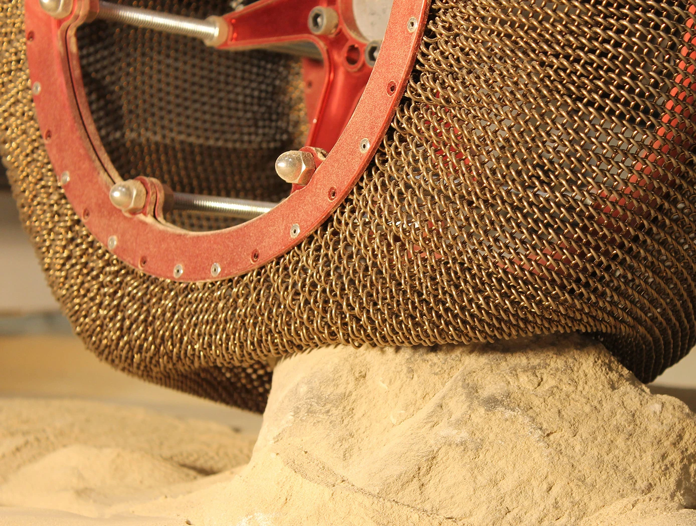
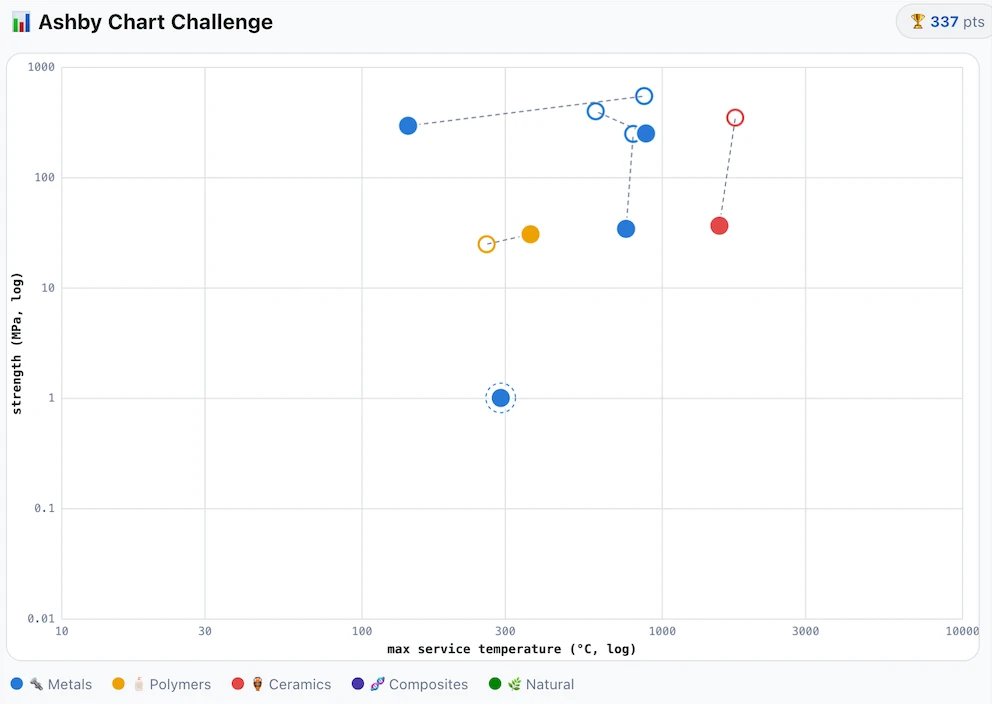
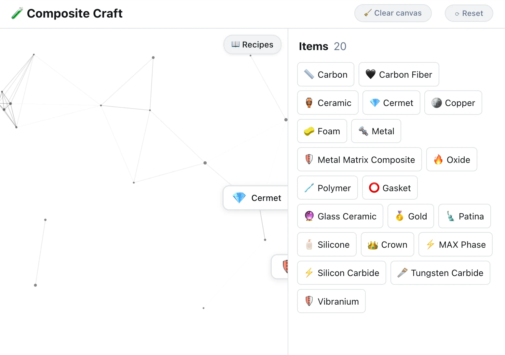

NASA's Shape-Memory Tyre
A tyre with no air to lose and a memory of its own shape.
Read spotlight →Guiding questionHow do material properties and classifications aid material selection for a specified manufacturing process or product?
This topic is mostly about learning to be precise, and precision is what separates a design justification from an opinion. "This material is strong" is not a statement anyone can check. Strong in tension or in compression? Stiff, or tough? Hard, or just heavy? Materials science has spent a couple of centuries building words that each mean exactly one thing, and once you have them you can say what you actually mean and then defend it.
It is tempting to treat this as a vocabulary list you memorise for Paper 1 and then forget. Resist that, because every material decision you make for the rest of the course runs through here. B3.1 asks you to choose a material and justify it, A3.2 and B3.2 ask you to predict how it behaves under load, and C3.2 asks what happens to it after the product dies. Get the properties straight now and those topics become mostly arithmetic. Skip them and you will be guessing for two years.
Students must be able toExplain how and why materials are classified and discuss the advantages of classifying materials in terms of physical, chemical and mechanical properties.
Classification systems allow designers and engineers to organise the vast range of available materials into manageable groups, making comparison and selection practical. The first recorded material classification system is attributed to Aristotle (384–322 BCE), who grouped matter by elemental properties. Modern classification follows three broad property categories:
Advantages of classification:
| Category | What it measures | Involves a chemical change? | Examples |
|---|---|---|---|
| Physical | What the material is | No | Density, thermal expansion, thermal conductivity, melting point, electrical conductivity/resistivity |
| Chemical | What the material does when it meets other substances | Yes | Corrosion resistance, reactivity with food, hygroscopy, flammability |
| Mechanical | What the material can withstand under force | No | Strength, stiffness, toughness, hardness, ductility |
Hover or focus an example for a quick note, or click it for more detail on how it gets used in design technology.
Contains iron, which gives good strength but leaves it prone to rusting unless treated, coated or alloyed against corrosion.
Contains no iron, so it resists corrosion far better than ferrous metals. Usually lighter, but often more costly to produce.
Hover or focus an example for a quick note, or click it for more detail on how it gets used in design technology.
The strong, stiff phase running through a composite, usually fibres or particles that carry most of the load.
The binder that holds the reinforcement in place, transferring load between fibres or particles and protecting them.
Help the people of Central Middlezhong to build new structures and demonstrate your knowledge of material classification and selection criteria. →
Students must be able toDiscuss frame, shell, solid and combination structures, and how they are used in the design of products. Understand that materials are classified into natural and human-made categories.
Materials are grouped by their origin into natural (found in or derived from nature) and human-made (synthesised or significantly processed by people):
Structural forms and their material implications: Product structures are often classified as frame, shell, solid, or combination, and the material choice is directly linked to the structural form:
Students must be able toEvaluate physical, chemical and mechanical properties to ensure selection of the most appropriate material for a specific purpose.
No single material excels in all properties. Material selection is a multi-criteria optimisation problem: the designer must identify the properties most critical to the product's function, environment of use, manufacturing process, cost constraints, and end-of-life requirements, then find the material (or combination of materials) that best satisfies those criteria simultaneously.
Key considerations in material selection:
In practice, designers use material selection charts (Ashby charts) to plot two properties simultaneously (e.g., strength vs. density), allowing rapid visual comparison of material families and identification of candidates for more detailed evaluation.
An Ashby chart is a scatter plot with one material property on each axis (commonly logarithmic scales), such as Young's modulus against density. Each material family (metals, polymers, ceramics, composites, foams) occupies its own cluster or "bubble" on the chart rather than a single point, because properties vary within a family depending on processing and composition.
This connects to the property categories introduced earlier in this topic: a designer who has already weighed up the functional, manufacturing, environmental, aesthetic, cost, and sustainability requirements for a product can draw a target zone on the chart (for example, "stiffness above 50 GPa and density below 3000 kg/m³") and immediately see which material families fall inside it. This turns a verbal list of requirements into a visual shortlist, narrowing dozens of candidate materials down to a handful worth investigating in detail.
Students must be able toExplain density, thermal expansion, thermal conductivity, melting point, electrical resistivity and electrical conductivity.
Physical properties describe what a material is. They can be measured without causing a chemical reaction or permanently altering the material's identity.
Students must be able toExplain corrosion resistance, reactivity (food safe), hygroscopy and flammability.
Chemical properties describe what a material does when it encounters other substances. They involve chemical reactions that alter the material's composition.
Students must be able toExplain tensile and compressive strength, stiffness, toughness, hardness, malleability, elasticity, plasticity and ductility.
Mechanical properties describe what a material can withstand when forces are applied.
| Hardness test | Indenter | Best suited to |
|---|---|---|
| Brinell | Steel or tungsten carbide ball | Castings and inhomogeneous structures |
| Rockwell | Steel ball or diamond cone | Quick general-purpose metal testing |
| Vickers | Diamond pyramid | Metals and ceramics needing comparable values across materials |
| Knoop | Elongated diamond pyramid | Thin sections or brittle materials |
| Durometer | Steel rod (0-100 scale) | Polymers and elastomers |
| Janka | Steel ball (half embedded) | Wood |

Plot and compare real materials on logarithmic property charts (strength vs. density, stiffness vs. cost) the same way materials engineers select candidate materials for a design. Try it →
Students must be able toExplain why combining materials can create composite materials more suitable for a specific purpose or context, using an example.
Composite materials combine two or more constituents, a matrix (binder/continuous phase) and a reinforcement (dispersed phase), to produce a material with properties superior to either constituent alone. The three main categories are:
1. Particle-reinforced composites: Hard particles distributed in a softer matrix. The particles resist deformation and wear; the matrix transfers loads and holds particles in place.
2. Fibre-reinforced composites: Fibres embedded in a matrix (typically epoxy resin). Fibres are excellent in tension but cannot resist compression or shear without the matrix. The matrix glues fibres together, transfers load between them, and prevents buckling.
3. Laminar (layered) composites: Layers of different materials bonded together.

A materials combination game, in the spirit of Neal Agarwal's Infinite Craft: combine matrix and reinforcement materials to discover new composites and learn a few things along the way. →
Students must be able toExplain how materials can be selected to react to external stimuli, including piezoelectricity, shape memory, photochromicity, magneto-rheostatic, electro-rheostatic and thermoelectricity.
Smart materials respond to a change in their environment (mechanical stress, temperature, light, electric or magnetic field) by significantly and reversibly changing one or more of their properties. This allows products that adapt to conditions without complex external control systems.

A tyre with no air to lose and a memory of its own shape.
Read spotlight →Students must be able toExplain how biomaterials are a key part of a circular economy and can be used by designers to design out waste.
Biodegradable materials are broken down by microorganisms (bacteria, fungi, algae) into water, carbon dioxide or methane, minerals, and organic matter: non-toxic substances that can re-enter natural cycles. This contrasts with conventional synthetic plastics, which persist in the environment for hundreds of years.
Examples include natural materials (wood, cotton, wool, paper, food) and engineered biodegradable polymers such as PLA (polylactic acid), derived from corn or sugarcane starch, which is used for biodegradable packaging, cutlery, and medical sutures.
Biodegradable materials and the circular economy: The circular economy's biological cycle depends on biodegradable materials re-entering natural systems safely after use. Designers who specify biodegradable materials are:
Design considerations for biodegradability:
A PLA cup stamped "compostable" almost never breaks down in a home compost bin, a landfill, or the ocean within any timeframe that matters. It needs an industrial composting facility: sustained heat above 55°C and a specific microbial mix that most cities don't actually operate at scale. Most "compostable" packaging ends up landfilled anyway, where it behaves close to ordinary plastic.
Is a manufacturer who prints "compostable" on the packaging, technically true but practically misleading, guilty of greenwashing? Where's the line between a genuine design-for-end-of-life decision and a marketing claim that shifts responsibility onto a disposal system that doesn't exist where the product is actually sold?
Ten questions covering all nine learning objectives, from classification and material selection through to composites, smart materials and biodegradable materials. Select one answer per question, then click "Check all answers" to see your score and the explanations.
Cricket bats are made from the timber of the cricket bat willow, a variety of white willow grown for the purpose. A tree is felled at about fifteen years, cut into rounds, split into clefts, and air dried for a year before shaping.
The bat is struck by a hard ball at speeds above 140 km/h. Before use the face is compressed with a mallet over several hours, a process called knocking in.
Table 1: Properties of cricket bat willow compared with two alternatives
| Property | Willow | Ash | Aluminium alloy |
|---|---|---|---|
| Density (kg/m³) | 380 | 690 | 2700 |
| Young's modulus (GPa) | 7 | 12 | 69 |
| Toughness | High | High | High |
| Hardness | Low | Medium | High |
(a) State the classification of cricket bat willow by source or origin. [1]
(b) Describe why the low density of willow matters to a batter, see Table 1. [2]
(c) Explain why the low hardness of willow is an advantage in a cricket bat rather than a defect, see Table 1. [3]
(a) A natural material, specifically a hardwood timber.
(b) At 380 kg/m³ willow is roughly half the density of ash, so a bat of the same size is about half the mass. The batter has to accelerate that mass through a swing in a fraction of a second and then stop it, so a lighter bat can be swung faster and redirected late as the ball deviates, which is what decides whether a shot connects.
(c) Hardness is resistance to indentation, and in a bat some indentation is exactly what is wanted. A soft face deforms locally when the ball strikes, and that deformation spreads the impact over a larger area and a longer time, which lowers the peak force reaching the batter's hands. Knocking in exploits this deliberately: compressing the surface with a mallet forms a dense skin over fibres that remain compliant beneath, giving a face that will not split while still yielding on impact. A hard material would instead return energy sharply and transmit shock into the wrists, and because willow is low in hardness but high in toughness it absorbs the blow by deforming rather than cracking, which is the combination that lets a bat survive thousands of impacts.
(a) • Natural material ✓
• Timber / hardwood ✓
Award [1] for the correct classification by source or origin up to [1 max].
(b) Physical properties include aspects of a material that can be measured and observed without it changing in any way.
• At 380 kg/m³ willow is about half the density of ash, so a bat of equal size is about half the mass ✓
• A lighter bat is accelerated faster through the swing for the same effort ✓
• A lighter bat can be redirected late as the ball deviates ✓
• Lower mass reduces fatigue over a long innings ✓
• A large hitting face can be provided without the bat becoming unmanageable ✓
• Bat mass is regulated in play, so low density buys volume within the mass allowed ✓
Award [1] for each detail, leading to an account of why low density matters to a batter, up to [2 max]. Credit responses that quote a value from Table 1.
(c) Mechanical properties include aspects of a material affected by the application of a force. Hardness is resistance to indentation or abrasion; toughness is the ability to absorb energy without fracturing.
• A soft face deforms locally at the point of impact ✓
• Local deformation spreads the impact over a larger area and a longer time ✓
• Spreading the impact lowers the peak force transmitted to the hands and wrists ✓
• Knocking in compresses the surface into a dense skin over fibres that stay compliant beneath ✓
• The compressed skin resists splitting while the material below still yields on impact ✓
• A harder face would return energy sharply and transmit shock into the wrists ✓
• Willow is low in hardness but high in toughness, so it deforms rather than cracks ✓
• Aluminium alloy at high hardness and 69 GPa would be unforgiving on a mistimed shot ✓
• The trade-off is a face that marks and dents in use, which is accepted as normal wear ✓
Award [1] for each relevant reason / cause explaining why low hardness is an advantage in a cricket bat up to [3 max]. Award a maximum of [2] where the response does not distinguish hardness from toughness.
A fire door is fitted with an intumescent seal, a strip set into a groove in the door edge. In normal use it is a thin, hard, inert strip and the door swings freely against a 3 mm gap.
Above about 200 °C the strip expands to many times its original volume and fills the gap, sealing the door into its frame so that smoke and flame cannot pass. The expansion is irreversible: once triggered the seal is spent and must be replaced.
Table 2: Behaviour of the intumescent seal
| Condition | Seal state | Gap |
|---|---|---|
| Ambient, 20 °C | Rigid strip, 2 mm thick | 3 mm |
| Fire, above 200 °C | Expanded char, up to 30 mm | 0 mm |
| After cooling | Remains expanded, friable | 0 mm |
(a) State the classification of the intumescent seal as a material type. [1]
(b) Outline why the seal's response must be irreversible for it to work as a fire barrier, see Table 2. [2]
(c) Analyse the requirement for a 3 mm gap around a door that must nevertheless close completely in a fire, see Table 2. [3]
(a) A smart material.
(b) A fire door must hold back smoke for thirty minutes or more, and the air at the door edge does not stay above 200 °C throughout, so a seal that contracted as the local temperature fluctuated would open and close the gap during the fire. The expanded char also has to survive the door being hosed and cooled while people are still evacuating behind it, which a reversible material would not do.
(c) The two requirements pull in opposite directions and the seal resolves them by changing state. A door needs clearance to function at all: a timber door swells and shrinks with humidity, the frame moves as the building settles, and a door fitted with no gap would bind and be left propped open, which defeats the whole purpose. So the gap is a functional necessity in the ninety-nine per cent of the door's life when there is no fire. In a fire the same gap becomes the failure path, because smoke passes through a 3 mm slot readily and smoke kills before flame does. A fixed material cannot satisfy both conditions, since anything sized to seal the gap would prevent the door closing. The intumescent strip works because its geometry is not fixed: it is thin and hard while the door is in use and expands fifteen-fold only when the condition that requires sealing is present. The material's response is triggered by the hazard itself, so the door needs no detection system, no power and no moving parts to seal.
(a) • Smart material ✓
Award [1] for the correct classification up to [1 max]. Accept thermally responsive or reactive material.
(b) Smart materials have one or more properties that change significantly in response to changes in their environment.
• A fire door must hold back smoke for thirty minutes or more ✓
• Temperature at the door edge fluctuates during a fire rather than staying above 200 °C ✓
• A reversible seal would contract and reopen the gap whenever the local temperature dropped ✓
• The char must survive the door being hosed and cooled while evacuation continues ✓
• An irreversible change means the seal cannot fail back to its open state ✓
• A spent seal is visible evidence that the door has been exposed and must be replaced ✓
Award [1] for each relevant brief point on why irreversibility is required up to [2 max].
(c) Smart materials respond to a change in their environment, which allows one component to satisfy conflicting requirements.
The gap is necessary:
• A door needs clearance to swing without binding ✓
• Timber swells and shrinks with humidity, so the gap absorbs dimensional change ✓
• Building movement and settlement alter the frame over time ✓
• A binding door is propped open by users, which defeats the fire door entirely ✓
The gap is the hazard:
• Smoke passes readily through a 3 mm slot ✓
• Smoke inhalation causes most fire deaths, so the smoke path matters more than the flame path ✓
• The gap runs the full perimeter, so the total open area is substantial ✓
The resolution:
• No fixed-geometry material can satisfy both, since anything sized to seal would stop the door closing ✓
• The intumescent strip changes geometry, thin in use and expanded fifteen-fold in fire ✓
• The trigger is the hazard itself, so no detector, power supply or mechanism is needed ✓
• A passive response cannot fail through lack of maintenance or power ✓
• Expansion to 30 mm against a 3 mm gap gives a large margin for a door that has warped ✓
Award [1] for each distinct guiding element / structure identified in the conflict between the two requirements up to [3 max]. Award a maximum of [2] where the response addresses only one side of the conflict.
An espresso machine forces water at 93 °C and nine times atmospheric pressure through a bed of ground coffee. The coffee sits in a basket held in a portafilter, a handled fitting that twists into the machine's group head and is removed and knocked out after every shot.
Portafilters are normally made from brass, often chrome plated. A café makes around 300 shots a day.
(a) Identify two mechanical properties required of the portafilter body. [2]
The portafilter is left locked into the machine between shots so that it stays hot. If it cools, the first water through it drops in temperature and the shot is under-extracted and sour.
Table 3: Properties of three candidate portafilter materials
| Property | Brass | Stainless steel | Aluminium alloy |
|---|---|---|---|
| Density (kg/m³) | 8500 | 7900 | 2700 |
| Specific heat capacity (J/kg K) | 380 | 500 | 900 |
| Thermal conductivity (W/m K) | 120 | 16 | 170 |
| Corrosion resistance in hot water | Good, leaches with acid | Excellent | Poor without anodising |
(b) Outline why brass holds its temperature well between shots, see Table 3. [2]
Coffee is mildly acidic. Brass is an alloy of copper and zinc, and prolonged contact with hot acidic water can leach zinc from the surface. Chrome plating prevents this, but the plating wears at the edges where the portafilter is knocked against a bar to empty it.
(c) Describe the chemical property of brass that requires it to be plated, see Table 3. [2]
A manufacturer proposes replacing brass with stainless steel, unplated, in a portafilter of the same external dimensions. The handle is walnut on both versions.
(d) Explain the consequences of changing from plated brass to unplated stainless steel, see Table 3. [4]
(a) Strength, to contain nine atmospheres of pressure, and toughness, to survive being knocked against a bar 300 times a day.
(b) Brass is dense at 8500 kg/m³, so a portafilter of a given size is heavy and holds a large mass of metal. Although its specific heat capacity is the lowest of the three, that mass means the total heat stored is high, and a large store of heat cools slowly, so the metal is still near brewing temperature when the next shot is pulled.
(c) Brass is an alloy of copper and zinc, and zinc is the more reactive of the two, so in prolonged contact with hot acidic water it is preferentially attacked and dissolves out of the surface. That reactivity leaves the remaining copper structure weak and porous and puts zinc into the drink, which is why a barrier layer of chrome is plated over the brass.
(d) The change fixes one problem and creates several others.
Corrosion improves outright. Stainless steel is excellent in hot water and does not leach, so the plating becomes unnecessary. That removes the failure the plated brass has, where chrome wears through at the knock-out edge and exposes brass exactly where the acid and abrasion are worst, and it removes a plating stage from manufacture.
Thermal behaviour changes in two ways that partly cancel. Stainless steel is slightly less dense at 7900 kg/m³, but its specific heat capacity is 500 J/kg K against brass at 380, so for the same volume it actually stores more heat and would hold temperature at least as well between shots. Against that, its thermal conductivity is 16 W/m K against 120, roughly seven times lower, so heat moves through it slowly. The portafilter will take far longer to come up to temperature from cold at the start of service, and once hot it will be unevenly heated, warm where it contacts the group head and cooler at the spouts. A café can work around this by leaving the machine on, but the first shots of the day will be inconsistent.
There are secondary effects. Stainless steel is harder to machine than brass, so unit cost rises even with the plating removed. The unplated surface will look and feel different from chrome, which matters on a component the customer sees. On balance the change is worth making for durability and for removing the leaching risk, provided the machine is left on, but it is not a straight substitution.
(a) Mechanical properties include aspects of a material affected by the application of a force.
• Strength ✓
• Toughness ✓
• Hardness ✓
• Stiffness ✓
• Fatigue resistance ✓
• Ductility ✓
Award [1] for each relevant mechanical property up to [2 max]. Do not credit density, thermal conductivity or corrosion resistance, which are not mechanical properties.
(b) Physical properties include density, thermal conductivity and specific heat capacity.
• Brass is dense at 8500 kg/m³, so a portafilter of a given size holds a large mass of metal ✓
• Heat stored is the product of mass and specific heat capacity, so mass compensates for the lower capacity ✓
• A large store of heat falls in temperature slowly for a given rate of heat loss ✓
• The metal is therefore still near brewing temperature when the next shot is pulled ✓
• High thermal conductivity at 120 W/m K keeps the whole body at an even temperature ✓
• Leaving it locked in the group head lets the machine continue to supply heat ✓
Award [1] for each relevant brief point on why brass holds temperature well up to [2 max]. Credit responses that reason from density and specific heat capacity together.
(c) Chemical properties include aspects of a material that lead to it chemically reacting with another.
• Brass is an alloy of copper and zinc ✓
• Zinc is the more reactive of the two constituents ✓
• Hot acidic water preferentially attacks and dissolves the zinc from the surface ✓
• This is dezincification, a form of selective corrosion ✓
• The remaining copper structure is left weak and porous ✓
• Zinc enters the drink, which is a contamination and food safety issue ✓
• Chrome plating provides a barrier that prevents contact between brass and the coffee ✓
Award [1] for each detail, leading to an account of the chemical property requiring plating, up to [2 max]. The response must refer to reactivity or corrosion for full marks.
(d) Identifying the most suitable material is a complex task involving physical, chemical and mechanical properties and aesthetic characteristics.
Corrosion, improved:
• Stainless steel has excellent corrosion resistance in hot water and does not leach ✓
• Plating becomes unnecessary, removing a manufacturing stage ✓
• Removes the failure mode where chrome wears at the knock-out edge and exposes brass ✓
• The wear point is where acid and abrasion are worst, so this is the plated design's weakest feature ✓
• No zinc can enter the drink, removing a food safety concern ✓
Heat storage, comparable or better:
• Density falls slightly, 7900 against 8500 kg/m³ ✓
• Specific heat capacity rises from 380 to 500 J/kg K ✓
• For the same volume the steel body stores more heat, so it holds temperature at least as well ✓
Heat transfer, worse:
• Thermal conductivity falls from 120 to 16 W/m K, roughly seven times lower ✓
• The portafilter takes much longer to reach working temperature from cold ✓
• Heat spreads unevenly, warm at the group head and cooler at the spouts ✓
• First shots of the day will be inconsistent unless the machine is left on ✓
Secondary effects:
• Stainless steel is harder to machine than brass, raising unit cost despite the plating saving ✓
• The unplated surface differs in appearance and feel from chrome on a visible component ✓
• Slightly lower mass alters the balance against the walnut handle ✓
Judgment:
• Worth making for durability and safety provided the machine stays on ✓
• Not a straight substitution, because conductivity changes the warm-up behaviour ✓
Award [1] for each relevant detail / reason / cause relating to the consequences of the material change up to [4 max]. Award a maximum of [3] where the response addresses only corrosion. Credit responses that distinguish heat storage from heat transfer.
Linking Questions